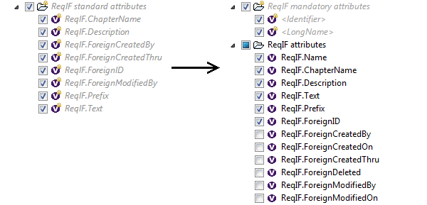
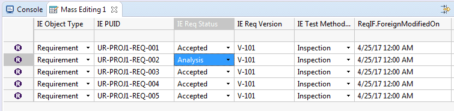

Notes: Attributes import has been clarified. When importing a ReqIF file, you may notice some differences compared to 0.10.0 version. For instance, attribute LongName doesn't contain anymore the ChapterName of the requirement, (as it is already available on ChapterName field).
You may have to update your tools depending on these attributes to use the correct one. (please see below)
Prior this version, attribute ReqIFLongName was matched to another ReqIf attribute.
| Attribute name | Requirement | Folder | Module |
|---|---|---|---|
| ReqIFLongName | ReqIF.ChapterName | ReqIF.Name | LongName |
It was misleading and according to the tool from which the Reqif was generated, the filled attributes may change from the defined match and were not properly imported.
Some tools are using only LongName to store the name of the requirement, some are using ReqIF.ChapterName for the heading, some other are using ReqIF.Name.
Now, the tool doesn't try to merge value of one attribute to the other and separated attributes are available on Requirement, Folder and Modules. Attributes will be filled by the values if they are defined in the ReqIf file.Some attributes like ReqIF.Prefix, ReqIF.ReqIF.ForeignCreatedBy, ReqIF.ForeignModifiedBy, ReqIF.ForeignDeleted were marked as mandatory but couldn't be imported even if the user was creating a file adding these attributes.
Now, it is possible to specify which ReqIF attributes to import. (Some of them are imported by default, but it is now possible to disable most of them)
Attributes of Requirements can now be edited / viewed in Mass Editing/Visualization tables.
Please have a look to the Capella Guide > User Manual > User Interface > Mass Editing and Visualization section.
In these tables you will be able to edit all attributes defined in the type of the Requirement.